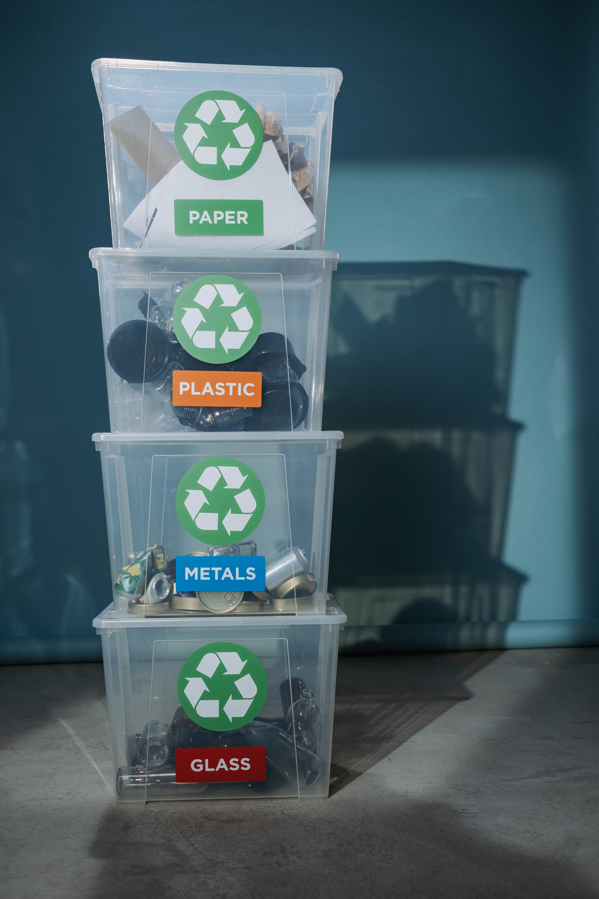

Ətraf mühiti qorumaq bizə qoşulun.
Daxil OlBərpa olunan enerji, təbii ehtiyatlardan əldə edilən, davamlı olaraq yenilənən və zamanla tükənməyən enerjiyə aiddir. Bu enerji mənbələri təmiz və davamlı hesab olunur, çünki onlar ətraf mühitə minimal təsir göstərir və istixana qazları emissiyalarını azaltmağa kömək edir.
Tullantıların azaldılması, həmçinin tullantıların minimuma endirilməsi və ya tullantıların qarşısının alınması kimi tanınan tullantıların miqdarının azaldılması və ətraf mühitə təsirin minimuma endirilməsi üçün davamlı təcrübələrin təşviqi prosesinə aiddir. Bu, tullantıların mənbəyində əmələ gəlməsini minimuma endirmək, resurs səmərəliliyini artırmaq, təkrar emal və təkrar istifadəni təşviq etmək üçün strategiyaların qəbulunu və tədbirlərin həyata keçirilməsini əhatə edir. Tullantıların azaldılması ilə bağlı bəzi əsas aspektlər və strategiyalar bunlardır: Mənbənin Azaldılması: Mənbənin azaldılması ilk növbədə tullantıların yaranmasının qarşısını almağa yönəlib. Buraya daha az qablaşdırma ilə məhsulların dizaynı, davamlı və təkrar istifadə edilə bilən məhsulların təşviqi və çap materialları əvəzinə rəqəmsal sənədlərin istifadəsini təşviq etmək kimi təcrübələr daxildir. Təkrar emal və kompostlama: Təkrar emal yeni məhsullar yaratmaq üçün kağız, plastik, şüşə və metal kimi materialların toplanması və emal edilməsini əhatə edir. Kompostlama qida qalıqları və həyətdəki bəzəklər kimi üzvi tullantıların parçalanmasını əhatə edir.

Dayanıqlı nəqliyyat və ya ekoloji cəhətdən təmiz nəqliyyat kimi də tanınan yaşıl nəqliyyat ətraf mühitə minimal mənfi təsir göstərən və enerji səmərəliliyini təşviq edən nəqliyyat növlərinə aiddir. O, istixana qazı emissiyalarını azaldan, havanın çirklənməsini minimuma endirən, enerjiyə qənaət edən və davamlı hərəkətliliyi təşviq edən təcrübələrin, texnologiyaların və siyasətlərin qəbulunu əhatə edir.


Biz davamlı və ekoloji cəhətdən təmiz yaşayışı təbliğ etməyi qarşısına məqsəd qoyan birliyik. Missiyamız ekoloji problemlər haqqında məlumatlılığı artırmaq və fərdləri planetə müsbət təsir göstərmək üçün ruhlandırmaqdır.
Daha çox